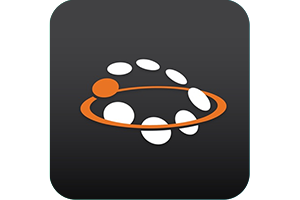

AP/Firmware Selector
Select AP models here
No filters. Showing all Versions.
-
Unleashed 200.13 What's New
 Scales upto 128 APs and 8 Switches. 2000 clients
Dedicated Master support
No new AP models released
Supports AP Models H320, H350, H510, H550, R320, R350, R510, R550, R610, R650, R710, R720, R750, R850, M510, T310c, T310d, T310n, T310s, T350c, T350se, T610, T610s, T710, R650, T710s, T750, T750se, C110, E510
Supports Switches ICX7000 Series
In gateway mode, a maximum of 50 APs and 1,028 clients are supported
Scales upto 128 APs and 8 Switches. 2000 clients
Dedicated Master support
No new AP models released
Supports AP Models H320, H350, H510, H550, R320, R350, R510, R550, R610, R650, R710, R720, R750, R850, M510, T310c, T310d, T310n, T310s, T350c, T350se, T610, T610s, T710, R650, T710s, T750, T750se, C110, E510
Supports Switches ICX7000 Series
In gateway mode, a maximum of 50 APs and 1,028 clients are supported
- Unleashed 200.12 What's New  Scales upto 128 APs and 8 Switches. 2000 clients Supports AP Models H320, H350, H510, H550, R320, R350, R510, R550, R610, R650, R710, R720, R750, R850, M510, T310c, T310d, T310n, T310s, T350c, T350se, T610, T610s, T710, R650, T710s, T750, T750se, C110, E510 Supports Switches ICX7000 Series In gateway mode, a maximum of 50 APs and 1,028 clients are supported
- Unleashed 200.11 What's New Scales upto 128 APs and 8 Switches. 2000 clients Expected to support AP Models H550, R350, T350 Series Supports AP Models H320, H510, H550, R320, R350, R510, R550, R610, R650, R710, R720, R750, R850, M510, T310c, T310d, T310n, T310s, T350c, T610, T610s, T710, R650, T710s, T750, T750se, C110, E510 Supports Switches ICX7000 Series In gateway mode, a maximum of 50 APs and 1,028 clients are supported
- Unleashed 200.10 What's New Scales upto 128 APs and 8 Switches. 2000 clients Supports AP Models C110, E510, H320, T310c, H510, T310d, M510, T310n, R320, T310s, R510, T610, R550, T610s, R610, T710, R650, T710s, R710, T750, R720, R750, R850, T750se Supports Switches ICX7000 Series In gateway mode, a maximum of 50 APs and 1,028 clients are supported
- Unleashed 200.9 What's New Scales upto 128 APs and 8 Switches. 2000 clients Supports AP Models C110, E510, H320, T310c, H510, T310d, M510, T310n, R320, T310s, R510, T610, R550, T610s, R610, T710, R650, T710s, R710, T750, R720, R750, R850 Supports Switches ICX7000 Series In gateway mode, a maximum of 50 APs and 1,028 clients are supported
- Unleashed 200.8 What's New Scales upto 128 APs and 8 Switches. 2000 clients Supports AP Models C110, E510, H320, T310c, H510, T310d, M510, T310n, R320, T310s, R510, T610, R550, T610s, R610, T710, R650, T710s, R710, T750, R720, R750, R850 Introducing ICX Switch monitoring and basic configuration support. Supports Switches ICX7000 Series In gateway mode, a maximum of 50 APs and 1,028 clients are supported
- Unleashed 200.7 802.11ac wave 1 and 2 - 50 APs only What's New Scales upto 50 APs and 1024 clients Supports AP Models C110, E510, H320, T300, H510, T300e, M510, T301n, R310, T301s, R320, T310c, R500, T310d, R510, T310n, R600, T310s, R610, T610, R710, T610s, R720, T710, T710s
- Unleashed 200.7 802.11ac wave2 only - 128 APs What's New Scales upto 128 APs and 2000 clients Supports AP Models C110, E510, H320, H510, M510, R320, T310c, T310d, R510, T310n, T310s, R610, T610, R710, T610s, R720, T710, T710s In gateway mode, a maximum of 50 APs and 1,028 clients are supported
- Unleashed 200.6 What's New Scales upto 25 Access Points and 512 concurrent clients Supports AP Models C110, T300, E510, T300e, H320, T301n, H510, T301s, R310, T310c, R500, T310d, R510, T310n, R600, T310s, R610, T610, R710, T610s, R720, T710, T710s
- Unleashed 200.5 What's New Scales upto 25 Access Points and 512 concurrent clients Supports AP Models H320, H510, R310, R500, R510, R600, R610, R710, R720, T300, T300e, T301n, T301s, T610, T610s, T710, T710s
- Unleashed 200.4 What's New Scales upto 25 Access Points and 512 concurrent clients Supports AP Models R310, R500, R510, H510, R600, R610, R710, T300, T300e, T301n, T301s, T710, T710s
- Unleashed 200.3 What's New Scales upto 25 Access Points and 512 concurrent clients Supports AP Models R310, R500, R510, H510, R600, R710, T300, T300e, T301n, T301s, T710, T710s
- Unleashed 200.2 What's New Scales upto 25 Access Points and 512 concurrent clients Supports AP Models R710, R310, R500, R600, T710, T710s, T300, T300e, T301n, T301s
- Unleashed 200.1 What's New Scales upto 25 APs and 512 clients Supports AP Models R310, R500, R600, T300, T300e, T301n, T301s
- ZoneDirector 10.5 What's New Supports AP Models C110, H320, H510, R310, R320, R500, R510, R550, R600, R610, R650, R710, R720, R730, R750, R850, R350, H550, H350, E510, T300, T300e, T301n, T301s, T310c, T310d, T310n, T310s, T610, T610s, T710, T710s, T750, T750se, T350c, T350d, T350se
- ZoneDirector 10.4 Release Notes Supports AP Models C110, H320, H510, R310, R320, R500, R510, R550, R600, R610, R650, R710, R720, R730, R750, R850, E510, T300, T300e, T301n, T301s, T310c, T310d, T310n, T310s, T610, T610s, T710, T710s, T750, T750se
- ZoneDirector 10.3 Release Notes Supports AP Models C110, E510, H320, H510, R310, R320, R500, R510, R600, R610, R700, R710, R720, R730, R750, T300, T300e, T301n, T301s, T310c, T310d, T310n, T310s, T610, T610s, T710, T710s
- ZoneDirector 10.2 Release Notes Supports AP Models C110, E510, H320, H510, R310, R320, R500, R510, R600, R610, R700, R710, R720, T300, T300e, T301n, T301s, T310c, T310d, T310n, T310s, T610, T610s, T710, T710s
- ZoneDirector 10.1 Release Notes Supports AP Models C110, H320, H500, H510, R300, R310, R500, R510, R600, R610, R700, R710, R720, R730, ZF7055, ZF7352, ZF7372, ZF7372-E, ZF7982, E510, T300, T300e, T301n, T301s, T310c, T310d, T310n, T310s, T610, T610s, T710, T710s, ZF7781CM, ZF7782, ZF7782-E, ZF7782-N, ZF7782-S
- ZoneDirector 10.1 Release Notes Supports AP Models C110, H320, H500, H510, R300, R310, R500, R510, R600, R610, R700, R710, R720, T300, T300e, T301n, T301s, T610, T610s, T710, T710s, ZF7055, ZF7352, ZF7372, ZF7372-E, ZF7781CM, ZF7782, ZF7782-E, ZF7782-N, ZF7782-S, ZF7982
- ZoneDirector 9.13 Release Notes Supports AP Models C110, H500, H510, R300, R310, R500, R510, R600, R610, R700, R710, T300, T300e, T301n, T301s, T610, T610s, T710, T710s, ZF7055, ZF7352, ZF7372, ZF7372-E, ZF7781CM, ZF7782, ZF7782-E, ZF7782-N, ZF7782-S, ZF7982
- ZoneDirector 9.12 Release Notes Supports AP Models H500, R300, R310, R500, R600, R700, R710, SC8800-S, SC8800-S-AC, T300, T300e, T301n, T301s, ZF7055, ZF7321, ZF7231-u, ZF7341, ZF7343, ZF7352, ZF7363, ZF7372, ZF7372-E, ZF7441, ZF7761-CM, ZF7762, ZF7762-AC, ZF7762-S, ZF7762-S-AC, ZF7762-T, ZF7781CM, ZF7782, ZF7782-E, ZF7782-N, ZF7782-S, ZF7982
- ZoneDirector 9.10 (ZD1200, ZD3000, ZD5000) Release Notes Supports AP Models H500, R300, R500, R600, R700, SC8800-S, SC8800-S-AC, T300, T300e, T301n, T301s, ZF7055, ZF7321, ZF7321-u, ZF7341, ZF7343, ZF7352, ZF7363, ZF7372, ZF7372-E, ZF7441, ZF7761-CM, ZF7762, ZF7762-AC, ZF7762-S, ZF7762-S-AC, ZF7762-T, ZF7781CM, ZF7782, ZF7782-E, ZF7782-N, ZF7782-S, ZF7982
- ZoneDirector 9.10 (ZD1100) Release Notes Supports AP Models R300, R500, R600, R700, SC8800-S, SC8800-S-AC, T300, T300e, T301n, T301s, ZF7055, ZF7321, ZF7321-u, ZF7341, ZF7343, ZF7352, ZF7363, ZF7372, ZF7372-E, ZF7441, ZF7761-CM, ZF7762, ZF7762-AC, ZF7762-S, ZF7762-S-AC, ZF7762-T, ZF7781CM, ZF7782, ZF7782-E, ZF7782-N, ZF7782-S, ZF7982
- ZoneDirector 9.8 Release Notes Supports AP Models ZF7025, ZF7055, ZF7321, ZF7321-U, ZF7341, ZF7343, ZF7363, ZF7351, ZF7352, ZF7372, ZF7372-E, ZF7761-CM, ZF7762, ZF7762-S, ZF7762-T, ZF7762-AC, ZF7762-S-AC, ZF7781CM, ZF7782, ZF7782-S, ZF7782-N, ZF7782-E, ZF7962, ZF7982, SC8800-S, ZF7441, R300, R500, R600, R700, T300, T301n, T301s
- ZoneDirector 9.7 Release Notes Supports AP Models ZF2741, ZF2942, ZF7025, ZF7055, ZF7321-U, ZF7341, ZF7343, ZF7363, ZF7351, ZF7352, ZF7372, ZF7372-E, ZF7761-CM, ZF7762, ZF7762-S, ZF7762-T, ZF7762-AC, ZF7762-S-AC, ZF7781CM, ZF7782, ZF7782-S, ZF7782-N, ZF7962, ZF7982, SC8800-S, ZF7441, R300
- ZoneDirector 9.6 Release Notes Supports AP Models ZF2741, ZF2942, ZF7025, ZF7055, ZF7321, ZF7321-U, ZF7341, ZF7343, ZF7363, ZF7351, ZF7352, ZF7372, ZF7372-E, ZF7761-CM, ZF7762, ZF7762-S, ZF7762-T, ZF7762-AC, ZF7762-S-AC, ZF7781CM, ZF7782, ZF7782-S, ZF7782-N, ZF7782-E, ZF7962, ZF7982, SC8800-S
- ZoneDirector 9.3 Release Notes Supports AP Models ZF2741, ZF2942, ZF7025, ZF7341, ZF7343, ZF7363, ZF7761-CM, ZF7762, ZF7762-S, ZF7762-T, ZF7762-AC, ZF7762-S-AC, ZF7942, ZF7962
Updated 2 Nov 2022 : Added Unleashed 200.13 support to tool. A few UI improvements.
Updated 31 May 2021 : Added Unleashed 200.10 support to tool. A few UI improvements.
Unleashed documentation : Click here
FAQ about installation : Click here
Adopted by Karthikeyan Krish LinkedIn profile
Adopted from source jPages, and author Luís Almeida